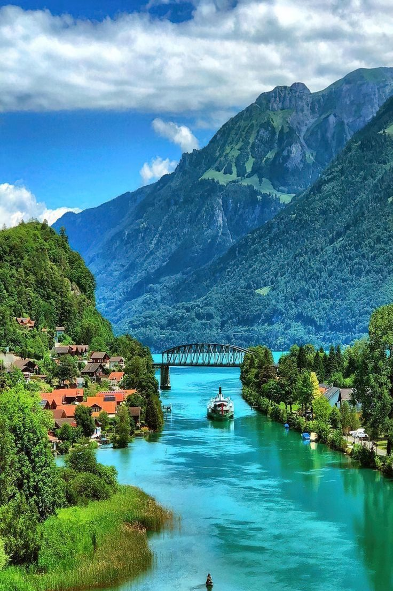
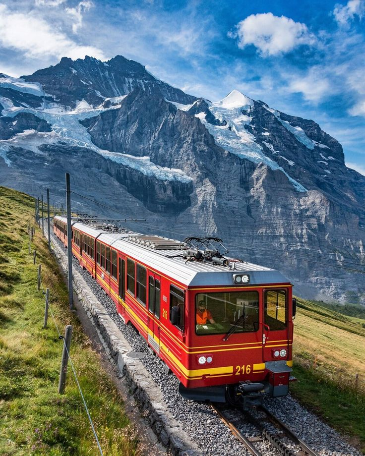
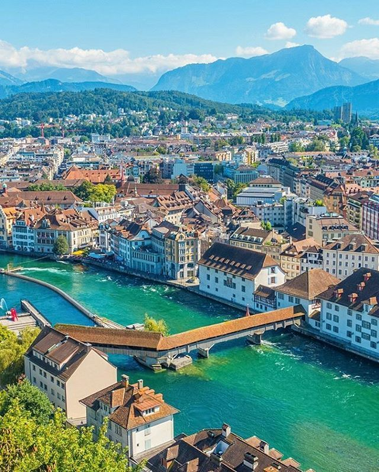
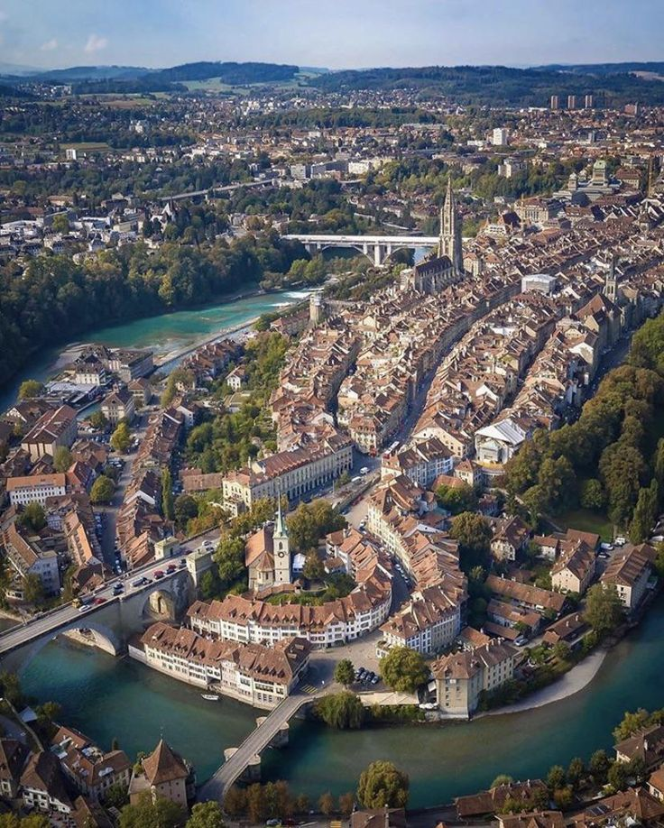

Embárcate en un viaje hacia la tierra de montañas majestuosas y lagos serenos. Suiza te invita a explorar sus paisajes alpinos imponentes,
ciudades encantadoras y la perfección del reloj suizo. Desde las cumbres nevadas hasta los valles llenos de encanto, cada rincón revela una
historia de tradición y sofisticación. ¡Descubre la exquisitez suiza, donde la naturaleza y la elegancia convergen de manera inolvidable!
Suiza en Fotogramas: Un Viaje Visual por los Tesoros Alpinos y Ciudades Encantadoras
Suiza es conocida por sus impresionantes paisajes alpinos, ciudades encantadoras y su reputación de precisión y calidad. Aquí tienes algunos de
los atractivos turísticos más destacados de Suiza.
Zermatt y el Matterhorn
La majestuosa montaña Matterhorn es uno de los iconos más reconocibles del país, y Zermatt es la base perfecta para explorarla.
Interlaken
Situado entre los lagos Thun y Brienz, Interlaken es un paraíso para los amantes de la naturaleza y ofrece vistas espectaculares a los Alpes.

Lago Ginebra
Conocido por su elegancia, el lago Ginebra ofrece paisajes serenos, viñedos y la ciudad de Ginebra con sus museos y organizaciones internacionales.
Jungfraujoch
Conocido como "El Techo de Europa", Jungfraujoch es accesible en tren y ofrece impresionantes vistas de los glaciares y picos alpinos.

Lucerna
Una ciudad a orillas del lago de los Cuatro Cantones, famosa por su puente de la Capilla y su casco antiguo bien conservado.

Alpes suizos
Aparte de Zermatt y Jungfraujoch, los Alpes suizos ofrecen numerosas oportunidades para practicar senderismo, esquí y disfrutar de la belleza natural.
Zúrich
La mayor ciudad de Suiza, conocida por su vibrante escena cultural, compras de lujo y la belleza de su lago.
Bern
La capital suiza, con su casco antiguo medieval declarado Patrimonio de la Humanidad por la UNESCO.

Cinco Días Suizos: Alpes, Lagos y Encanto Urbano
Nos sumergiremos en un recorrido por los impresionantes paisajes alpinos, ciudades llenas de encanto y la elegancia que define a Suiza. Durante cinco días y cuatro noches,
exploraremos desde las animadas calles de Zúrich hasta los picos nevados de Jungfraujoch, pasando por la serenidad de los lagos suizos. Prepárense para una travesía visual
a través de la rica cultura, la historia fascinante y los tesoros naturales que hacen de Suiza un destino único en el corazón de Europa.
Día 1: Zúrich - Bienvenida a la Ciudad y Paseo por el Casco Antiguo
Mañana:Llegada a Zúrich, desayuno y exploración del casco antiguo (Altstadt).
Tarde:Visita al Museo Nacional Suizo y paseo por el lago Zúrich.
Noche:Cena en un restaurante local en el casco antiguo.
Día 2: Interlaken - Belleza Alpina y Aventuras en Naturaleza
Mañana:Viaje a Interlaken, desayuno con vistas a los Alpes.
Tarde:Excursión en barco por el lago Thun o Brienz.
Noche:Cena en Interlaken con vistas a las montañas.
Día 3: Jungfraujoch - Exploración del Techo de Europa
Mañana:Viaje en tren a Jungfraujoch, disfruta de las vistas panorámicas.
Tarde:Descenso y tiempo libre para explorar Interlaken.
Noche:Cena en un restaurante tradicional suizo.
Día 4: Lucerna - Descubriendo el Encanto a Orillas del Lago
Mañana:Viaje a Lucerna, visita al Puente de la Capilla y al casco antiguo.
Tarde:Excursión en barco por el lago de los Cuatro Cantones.
Noche:Cena en un restaurante frente al lago.
Día 5: Berna - Exploración de la Capital Suiza
Mañana:Viaje a Berna, desayuno y visita al casco antiguo.
Tarde:Paseo por el Parque de las Rosas y la Torre del Reloj Zytglogge.
Noche:Cena de despedida en una terraza con vistas a Berna.
Suiza en Números: Explorando el Costo Detallado de Nuestra Aventura Alpina
Los costos exactos del viaje puede depender de la temporada del año, las tarifas actuales, la elección de hoteles y restaurantes, y si se aprovechan ofertas o descuentos.
Sin embargo, una estimación general de los costos para un viaje de 5 días y 4 noches en Francia desde Colombia, asumiendo un presupuesto moderado, es el siguiente.
Vuelos (ida y vuelta desde Bogotá, Colombia a Zúrich, Suiza):
Precio estimado: $1,500 - $2,500 USD por persona.
Hospedaje:
Zúrich (2 noches): $300 - $600 USD.
Interlaken (1 noche): $150 - $300 USD.
Lucerna (1 noche): $150 - $300 USD.
Transporte interno (trenes y traslados):
Precio estimado: $200 - $400 USD por persona.
Comida:
Precio promedio por comida: $20 - $50 USD por persona.
Total estimado para 5 días: $400 - $800 USD por persona.
Entradas a sitios turísticos y actividades:
Jungfraujoch: $100 - $150 USD.
Pase de barco en el lago de los Cuatro Cantones: $30 - $50 USD.
Gastos personales (compras, souvenirs, etc.):
Precio estimado: $100 - $200 USD por persona.
Seguro de viaje:
Precio estimado: $50 - $100 USD por persona.
Costo total estimado del viaje:
Rango bajo: $2,830 - $4,050 USD por persona.
Rango alto: $3,780 - $5,600 USD por persona.
Nota: Los precios son aproximados y están sujetos a cambios. Se recomienda verificar las tarifas actuales y realizar reservas con anticipación para obtener mejores precios.